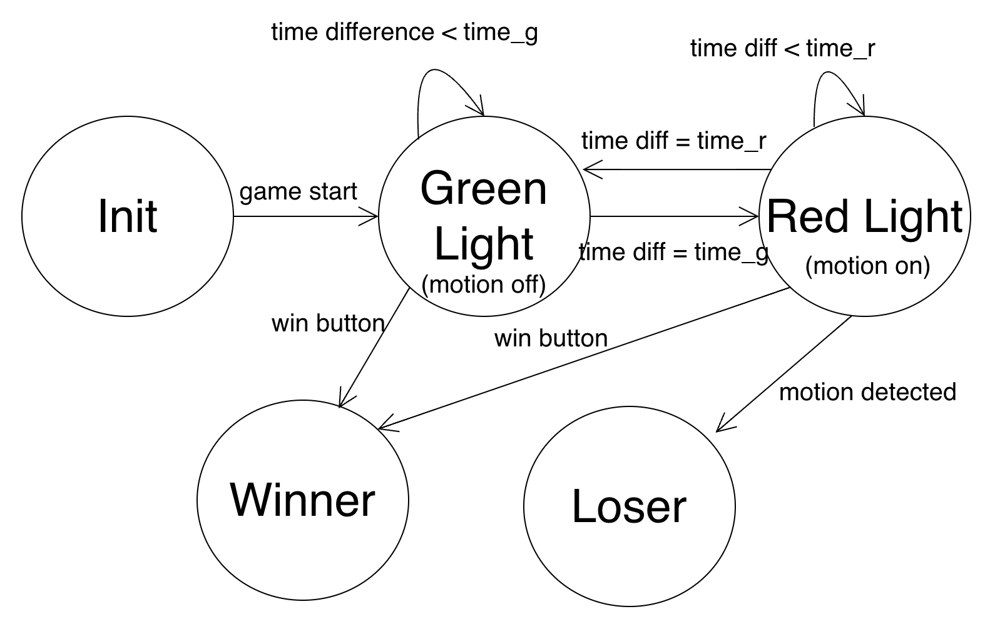
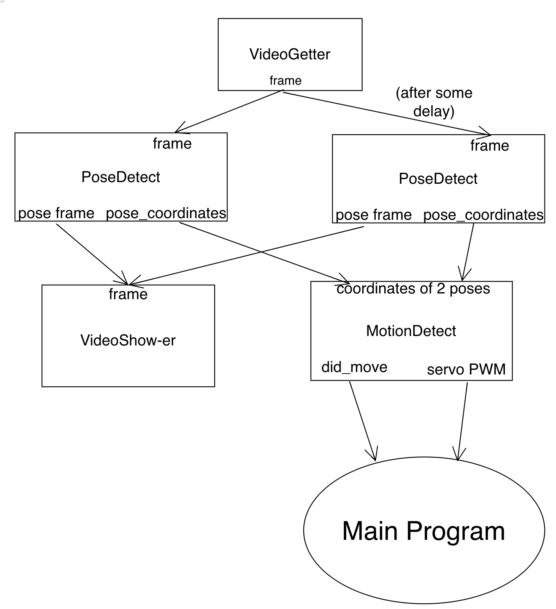

Squid Game: Red Light, Green Light
ECE 5725 Spring 2022
Aditi Agarwal (aa2224) and Raquel Taborga (rmt229)
Demonstration Video
Introduction
For this final project, we recreated the Red Light, Green Light doll from the famous Netflix series Squid Game. The game works by having players all start at the start line and whenever they hear the “Green Light” music, they can move forward, whenever this music stops, the game is in "Red Light" mode and the players must freeze. If they are caught moving during the red light phase, they are out. The goal of this game is to get to the doll first and press a button on the Pi, signaling that the player has crosssed the finish line. Our game has a single-player and 2-player mode.
The Raspberry Pi runs OpenCV to capture video stream from an attached PiCamera and TensorFlowLite (TFLite) process a frame to identify 17 keypoints on a person to identify their pose. The Main Pi (henceforth referred to as RPiMain) controls an RGB LED strip that lights up red during the Red Phase, green during the Green phase, blinks red when a player is eliminated, and oscillates rainbow once the game has a winner. When a player is eliminated, we use the keypoints from our pose detection to rotate a servo-mounted laser pointer at the losing player. We use a second Raspberry Pi (RPi2) to play sound via Bluetooth connection to a speaker during the Green Light phase of the game. This is because it is impossible, due to hardware limitations in the Pi, to play sound (of any kind) while running the LED library. Audio cannot play when called with a 'sudo' command, and the LED library can only run when called with a 'sudo' command.
Project Objective:
- Use OpenCV, tflite and PiCamera to detect motion for two players
- Use a servo motor to point a laser pointer at whoever moves
- Play the Red Light Green Light song during green stages
- Sync an LED strip with the proper game stage
Design
This project had many moving parts; we had multiple peripheral devices and a fair amount of image processing. We will break down our project design into their Hardware and Software parts.
High Level Overview
The novel part of this project, for us, was the pose detection and image processing. We ran a 64-bit OS (Debian) on the Pi, since we could not find any OpenCV or TensorFlow packages whose models worked on a 32-bit kernel. The Raspberry Pi used OpenCV just to interface with the PiCamera and capture frame images. We also used OpenCV to display the processed image with our keypoints. We used a known model we found online (PoseNet) on TFLite to identify 17 keypoints on a person.
Once we had a way to identify poses for a person frame by frame, we implemented game logic around it to only do our motion detection in the Red Light phase. In this game logic, we also had to play sound, run the LEDs, and trigger the standard servo motor to point to the losing player.
For the stand, we used a premade wooden coat stand we found in the corner of the room. We encourage future students of this class to repurpose as much of their project as possible! We outfitted the coat stand with shelves and a hanger to mount the RPi and additional accessories to create a final project that looked like a life-size doll like in Squid Game.
Hardware
All parts mentioned are listed and linked in the References Section.

PiCamera
To capture input video stream, we used a PiCamera provided by Professor Skovira. This is made by Raspberry Pi and is very easy to integrate with the Pi. Within less than an hour, we were able to take pictures with the PiCamera and save onto the Pi. The PiCam connects to the Pi via ribbon strip.

LED Strip
We used a 3.2ft long WS2812B LED strip. We picked this model of LED strips because this is a really easy type of LED strip to configure. It has 3 pins: VCC, GND, and Control. The Control pin sends a PWM signal to the LED strip and allows you to configure which the specific RGB color to a specific pixel. Our strip had 60 pixels. Using the Neopixel Python library, it was straightforward to control this LED strip. It requires a 5V input voltage, so we connected this to a DC voltage supply. We could have connected it to a battery just as easily, this was just easy for us during debugging, and we did not need the doll to move.

Parallax Standard Servo Motor
To eliminate a player, we wanted to mount a laser onto a servo. This class gave us experience working with servo motors, and we knew from past projects that we required a standard servo, not a continous servo. That is, we wanted a motor for which we could specify a particular angle (PWM Duty cycle), and the motor would move to that angle and remain there. We used Professor Skovira's Parallax Standard Servo to achieve this. We used software-defined PWM signals using the RPi.GPIO library, but in retrospect we should have used a hardware-defined PWM pin to avoid oscillatory behavior with the servo.
When working with lasers, it's important to take precautions so as to not blind or create eye discomfort for other people. We used a weak laser pointer and angled it so that it would aim (roughly) at the neck down for our players.

Speaker
To minimize our use of wires (since we had a lot), and to try something new, we opted for using a Bluetooth Speaker. This was very easy to setup on the RPi. In terminal, you can call the bluetoothctl environment and connect through terminal, or simply connect to a new device by using the RPi UI and selecting the Bluetooth icon in the top right hand corner. To play sound, we ended up using pygame.mixer. We also experimented with using mplayer and PulseAudio. All of these worked, we just settled on one. We downloaded our desired sound and saved it as a wav file on the SD card, then loaded this sound into the Python program using pygame.mixer.

The biggest issue with running audio was that any method of playing sound did not work when called with 'sudo'. It worked every time without the 'sudo' command, with all audio player programs mentioned above. Whether we used the audio jack or Bluetooth speaker, sound worked with out 'sudo', and never with 'sudo'. After much researching, changing access permissions, and even enabling system-wide audio, we found a source that explained that it is impossible to run audio in 'sudo'. However, neopixel needed to be run in 'sudo'. The reason for this is because they both access the same PWM pins internally, so it is impossible to grant root user permissions for audio, and impossible to not allow neopixel to access those pins. On the Raspberry Pi 4, you cannot run audio and neopixel simultaneously. We offloaded the responsibility of playing audio onto another RPi. Using a single GPIO pin between the two, RPi Main would pass information about being in the Red State Phase (INPUT==1) or not (INPUT==0). RPi2 would only play audio on INPUT high, and pause audio on INPUT low.
Software
We developed the code so that the game can be played in 2 player mode or single player mode by making it a command-line argument. Since OpenCV and tflite are heavy applications, as well as video streaming, we made use of multi-threading to make our application run faster.
We created multiple game states: red, green, loser, winner. As shown in the project.py in the Code Appendix we have a while loop that plays the game unless someone has lost or won. It chooses a random number (time_g) of seconds between 1 and the length of the Red Light, Green Light song to switch from being green to red, and then another random number of seconds (time_r) to switch from red to green.
FSM of the full game logic
In the Green Light phase, we send a GPIO High output to the second RPi so that it can play the sound. In the Red Light phase, we initiate the Pi Camera frame fetching, pose detection, and motion detection. During both states if a player presses GPIO button 27, then they win and the game is over. To detect the button press, we use a callback function so that at any point in the program if a button press is detected the game can go to the winner state. During the winner state, the LEDs display a rainbow pattern and then the program quits. The loser state happens only from the red light stage if someone is detected moving.
For motion detection, we use multiple threads. We instatiate one thread that is an instance of VideoGetter, 2 threads that are instances of PoseDetect (or PoseDetect2 for 2 player), 1 thread that is an instance of VideoShower, and 1 thread that is an instance of MotionDetect. All of the threads are running constantly but only take action once their input is not empty.
Threads for one-player mode
The VideoGetter thread captures frames from the PiCamera using OpenCV. The frames from VideoGetter feeds into the PoseDetect threads. PoseDetect takes in a frame and runs pose detetection using a tflite PoseDetection model. The tflite model takes in the image and outputs the keypoint coordinates which are coordinates of different body parts (eyes, nose, shoulders, etc.). For 2 player-mode, the input frame is cut in half and PoseDetect2 detects for each side of the frame and places the images with the coordinates drawn on them next to each other.The PoseDetect code then uses those coordinates to draw on the figure where the detection is and also outputs the coordinates in a list. The image showing the coordinate drawing is then sent to video show-er which displays the frame on the monitor. MotionDetect takes in 2 lists of coordinates and determines if the keypoints are different enough between frames. If they are, then it changes its did_move parameter to true and the main program sends a PWM output signal to the servo using the servo PWM value calculated from motion detector. For 2 player mode, there are 2 motion detecters which take in each players keypoints to detect motion.
Testing
This was a very modular project, which lent itself well to incremental testing. Each part required functional testing to make sure that we had established connections properly or were generating the right signal, plus additional calibration testing to ensure the gaming experience was smooth.
Ensuring Parts Worked
PiCamera and OpenCV
The first thing we started testing was the PiCamera. Following the references from the Canvas page, plus some online documentation, we were able to capture a picture upon startup of our python program. We got to installing OpenCV (originally on a 32-bit OS), and we ran into various hurdles doing so. It was difficult to find a version of OpenCV that worked - we had to install many versions of other libraries to make it finally work. When we switched to a 64-bit OS, the installation process was a lot simpler. We tested this by importing cv2 in Python in a test script and capturing video stream and taking pictures. We tested resizing features and played around with the resolutution and FPS parameters to settle on one that looked real-time to the human eye, and gave us a crisp enough image that it could capture a person from over a meter away.
PWM Peripheral Devices: LEDs and Servo
The LEDs were controlled with a python library called neopixel. Following some documentation online, we were able to customize the color and timing of the LEDs pretty simply. We had a separate Python file called LED.py that solely tested the LED functionality. The rainbow behavior seen during the Winner stage of the game was also tested in this script.
The second PWM-controlled device in our project was the standard servo. We wrote another test script for this in Python called servo.py. This took a lot of testing; the servo did not originally work. We used the familiar method of PWM signal generation: defining a PWM pin using the RPi.GPIO library. This did not work. We tried sending values between 0 and 100 to the pwm.ChangeDutyCycle() function, but it would only ever move in one direction - clockwise until it hit the end of its range. It seemed that random values would trigger this. To test this, we connected an oscilloscope to the PWM pin to make sure we were generating a sensible PWM waveform. Thanks to this, we were able to determine that our code was set up well, but we needed to switch to a different servo. Eventually we 1) replaced this servo motor, and 2) checked the datasheet to confirm what range of PWM values the motor accepts. It turns out that, at 50Hz (T=20ms), 0 to 1800 degrees maps to 2.75 to 11.25 duty cycle range for the servo motor. See the datasheet for information on how this was determined.
Sound
This required a fair amount of testing due to the 'sudo' incident. We wrote a playsong.py script that was just responsible for playing
sound. We alternated between using pygame.mixer, calling mplayer through an os command in python, calling mplayer through a FIFO command,
and just running audio through terminal using these commands. We tried all kinds of combinations to get sound to work, and finally settled on
using a second Pi.
Once we realized that sound could reliably work with any method, we changed playsong.py to play sound based on an input from RPi Main.
We configured a GPIO input pin and set the program to play the song when the pin was held HIGH, and stop when it was LOW. We first tested
this with a voltage supply to manually set the pin HIGH or LOW. Once we were confident the program logic worked, we made the hardware connection
between RPi Main and RPi 2, connecting an oscilloscope on the output pin of RPi Main to make sure we were sending the correct signal.
We were now able to play and stop sound on demand, and we integrated this into our main program: project.py.
Pose Detection
We followed an example of single-person pose detection using PoseNet on TFLite on a Raspberry Pi 4 (linked here) To test this we would have one person run the code, analyzing the keypoints that got printed to terminal, and another person model different poses at varying distances. In order to make debugging easier, and for better demo purposes, we added a way to display the posed image to the monitor so that we could see the real-time stream of key points being detected. This was our lengthiest program so far, so once we were confident this worked for single-person pose detection, we began adding game logic around this code, integrating the previous parts we had tested.
Calibration
Standard Servo
Since we were mapping the position of the laser based on keypoints of a person, we needed a way to center the laser pointer at the beginning, and we didn't need the full 180 degree range of the servo. To calibrate this, we wrote a calibration script where we specified PWM values for the center, leftmost, and rightmost points. The range of the servo needed to be about the same as what what PiCamera could see.
Motion Detection Sensitivity
The motion detection logic to determine when a player has moved, and is therefore eliminated, was determined by analyzing
two pose images, 500ms apart, during the Red Light phase. If there was a change in keypoints, this meant the player had moved.
However, by nature of the model we were using, noise of the camera, and general human movement (like hair or eyes),
we couldn't use absolute difference. We also did not need to use all 17 keypoints, which were:
nose, left eye, right eye, left ear, right ear, left shoulder, right shoulder, left elbow, right elbow,
left wrist, right wrist, left hip, right hip, left knee, right knee, left ankle, right ankle.
Source
Through trial and error, we changed our sensitivity threshold to allow for subtle movements of shoulders, elbows, hips, wrist, and ankles.
We also realized that we didn't need data for parts of the face that moved, since that was a little finicky to process and almost
always yielded that the person had moved. The model, that is, the weights file, was derived from training detection of these points, however,
so we couldn't save computation time by not calculating those points. We simply ignored them for determining if a person had moved.
Result
We were able to meet our initial project objectives as described in the description of detecting multiple people. We changed from having many players to only having a maximum of 2 players due to the frame space and the latency of detecting multiple people at once. The game logic works smoothly, sound plays at the right times and the LEDs function as expected. The laser pointer on the servo is semi-accurate, not fully accurate and also wobbles a lot.
Work Distribution
Aditi Agarwal
aa2224@cornell.edu
Raquel Taborga
rmt229@cornell.edu
Parts List
- Raspberry Pi - Provided in lab
- Raspberry Pi Camera V2 - Provided in lab
- Alitove 60 Pixels LED Strip- $9.99
- Cat Laser Pointer- $7.99
- LEDs, Resistors, Servo and Wires - Provided in lab
Total: $17.98
References
Netflix's Squid GamePiCamera Document
Parallax Standard Servo Datasheet
Adafruit NeoPixel Library
Pose Estimation Blog + Code
Multi-Threading for Video
TFLite Pose Estimation Model
Bootstrap for this website
R-Pi GPIO Document